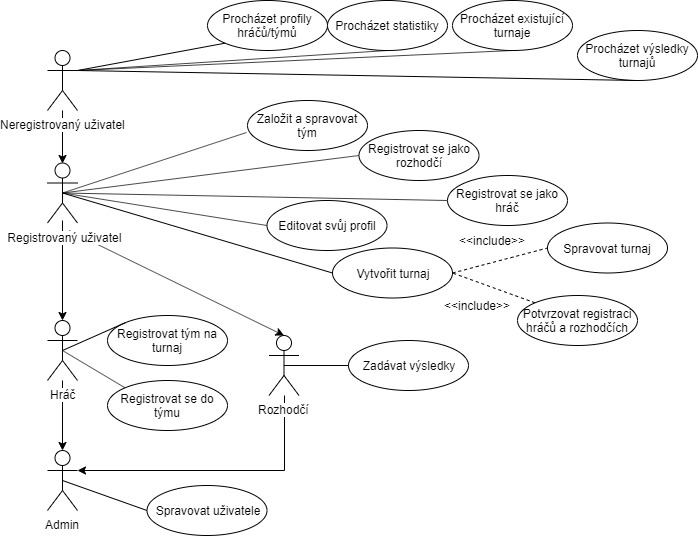
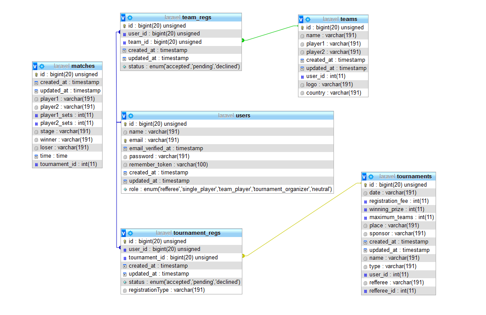

Sport - Informačný systém pre turnaje v stolnom tenise - Pong|Tourney
- Autoři
- Richard Borbély
xborbe00@stud.fit.vutbr.cz -
popis činnosti v týmu
- Daniel Weis
xweisd00@stud.fit.vutbr.cz -
popis činnosti v týmu
- Jakub Novotný
xnovot1l@stud.fit.vutbr.cz -
popis činnosti v týmu
- URL aplikace
- http://pong-tourney.esystem.sk/public/
Uživatelé systému pro testování
Uveďte prosím existující zástupce všech rolí uživatelů.
| Login | Heslo | Role |
|---|
| refferee@pongtourney.com | refferee | Rozhodca |
| admin@pongtourney.com | adminadmin | Administrátor |
| player@pongtourney.com | playerplayer | Hráč (individuálny) |
| captain@pongtourney.com | captaincaptain | Hráč (kapitán, zakladateľ tímu) |
| teammate@pongtourney.com | teammate | Hráč (zaregistrovaný do tímu) |
| organizer@pongtourney.com | organizer | Organizátor turnaja |
Diagram prípadov užitia

Logika rolí
Logika rolí v našej implementácii je nasledovná: Zaregistrovaný užívateľ má vždy možnosť vytvoriť si vlastný tím alebo turnaj.
Takisto má stále možnosť zaregistrovať sa do hociktorého turnaja, ktorý sám nevytvoril, a to ako hráč, tak aj ako rozhodca.
Užívateľ teda môže byť usporiadateľom jedného turnaja, rozhodca druhého, hráč tretieho, no nemôže v týchto roliach byť v jednom turnaji zároveň.
Implementácia
Implementácia projektu je uskutočnená pomocou PHP frameworku Laravel. Laravel umožňuje jednoduchú prácu s architektúrou MVC. Táto architetúra nám
projekt rozdeľuje na databázu (model), kontroléry a pohľady (view).
Postup:
-
Prvým krokom bola transformácia ER-diagramu na samotnú databázu, a to formou migrácií, v´daka ktorým sme do tabuliek naplnili potrebné atribúty.
Vzťahy medzi tabuľkami sme definovali pomocou databázových operácií ktoré Laravel ponúka (join, where, select...)
-
Následne sa vytvorili jednotlivé súbory (blade-y), ktoré slúžia na interpretovanie pohľadov (view). Tieto blade-y umožňuje Laravel naväzovať na seba
a jedným blade-om je možné rozšíriť druhý. Týmto spôsobom sa vrchné "menu" zachová na každej strane, bez ohľadu na jej obsah a bez nutnosti zbytočnej redundancie.
-
Na záver bolo treba prepojiť databázu a view, na čo nám slúžili kontroléry. Do nich sme naimplementovali jednotlivé funkcie, ktoré ťažia dáta zo samotnej
databázy a vracajú väčšinou práve pohľad na špecifický blade, do ktorého sa môžu predať údaje a to nám umožňuje pracovať s databázovými dátami rovno v pohľade.
Na implementáciu dizajnu sme použili CSS framework Bootstrap 4.
Popis niektorých php skrípt:
- sport\resources\views\auth\register.blade.php: registrácia užívateľa
- sport\resources\views\auth\login.blade.php: prihlasovanie užívateľa
- sport\resources\views\auth\... .php: ďalšie skripty týkajúce sa prihlasovania
- sport\resources\views\pages\home.blade.php: domovská stránka
- sport\resources\views\pages\team.blade.php: súpiska registrovaných tímov
- sport\database\migrations\create_tournaments_table.php: vytvorenie tabulky "tournaments" v databázi
- sport\database\migrations\... .php: migrácie do databázy
- sport\routes\... .php: Routy, ktoré spájajú URL adresy s akciami, ktoré vykonávajú kontrolery
- sport\.env: konfigurácia prostredia (vrátane prihlásení do databáze)
Databáza

Relačný model je automaticky vygenerovaným modelom na základe používanej databázy. Obsahuje všetky vytvorené tabuľky a atribúty k nim. Na obrázku je možné vidieť,
že tabuľka "matches" nie je vo vzťahu so žiadnou z ostatných tabuliek. Za touto "absenciou" vzťahu sú implementačné dôvody. Ak rozhodca pridáva zápas, dostáva možnosť
vybrať si z mien hráčov, ktorí sú do samotného turnaja zaregistrovaní a potvrdení jeho usporiadateľom. Priame spojenie medzi týmito tabuľkami neexistuje.
Inštalácia
- Postup inštalácie na server
- Nahranie celého projektu na server (obsah adresára ./src/)
- Úprava konfiguračného súboru '/.env'(databázové pripojenie, projektové premenné)
- Pridanie súboru index.php do root adresára s presmerovním cesty '/' na '/public/index.php'
- V prípade nefunkčnosti niektorých častí aplikácie, upraviť odkazy v kóde na '/public/*'
- Softwarové požiadavky
- PHP >= 7.2.0
- PHP Framework Laravel v6.4
- CSS Framework Bootstrap v4
- [XAMPP - vytvorenie lokálneho Apache, MySQL serveru pre testovanie na 'localhost']
- [Composer https://getcomposer.org -- Balíčkovací manažér pre PHP]
- Rozbalenie, konfigurácia, inicializácia...
- Rozbaliť odovzdaný .zip archív.
- Vytvoriť nový Laravel projekt 'composer create-project laravel/laravel project_name.
- Vložit obsah adresára './src/' do adresára '/' vytvoreného projektu.
- Cez phpMyAdmin importovať databázu cez sql skript('./iis.sql')
- Vyplniť korektné údaje(DB_*) v súbore '.env' v root adresári projektu pre úspešné pripojenie k databáze
Známe problémy
Projekt nezahŕňa možnosť rozlosovania zápasov turnaja.